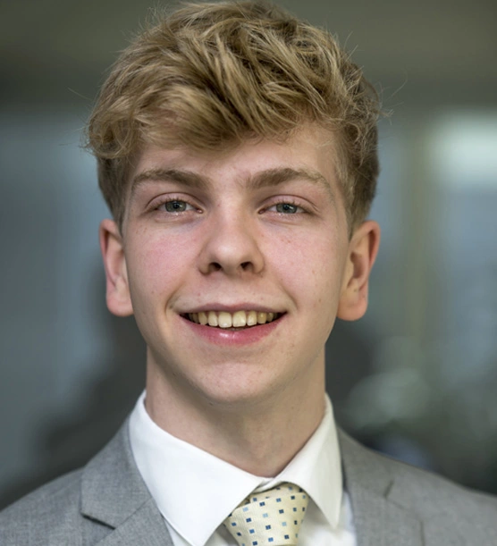

About
Hi there! I'm Joris Alkema, a 20-year-old student from The Hague, currently residing in Leiden. I am studying Data Science & Artificial Intelligence and hope to finish this year, starting my MSc in AI at Amsterdam or Computer Science in Leiden.
I built this website to be as simple as possible, as I am a backend developer, not front end. A website schould be fast, legible and work on every device. It is inspired by sites such as as 'A fucking Website' and 'Brutalist web design'
Projects
- Currently working on a software development project at Leiden University on using large language models to create SMART requirements from big data.
- Writing my bachelor-thesis about side-channel attacks on neural networks running on the chipwhisperer platform, an open source project to implement side-channel power analysis & fault injection attacks, and comparing them to simulated results.
- Developed web scrapers in Python to keep track of financial info.
A link to my Github can be found here.
Work
October 2023 - Present Self-employed
I am still a system administrator, but am looking to take on work using LLMs. Registered with the Dutch Chamber of Commerce under number 93591748
September 2022 - October 2023 System administrator - Roodhals
I install hardware, help users with problems and maintain contact with various 3rd parties for maintenance of our website, internet connection and cloud environment. Developed tools to help with tracking financial info so that analysts can save time.
Education
September 2021 - Present DSAI - Leiden University
Third year. Focus on theoretical computer science subjects (C++).
September 2020 - July 2023 Informatica - Hogeschool Leiden
Finished first year (60EC). Specialised in software development in the last semester (JAVA).
Contact
Contact info can be found on my LinkedIn profile.
Colophon
This site was built in HTML by hand and is styled using Tachyons. This site is hosted locally and updated by using GitHub CI. Headings are set in Helvetica, with a fallback to the system sans-serif. Body text is set in Calisto, with a fallback to the system serif. This site supports dark mode, based on your OS settings.